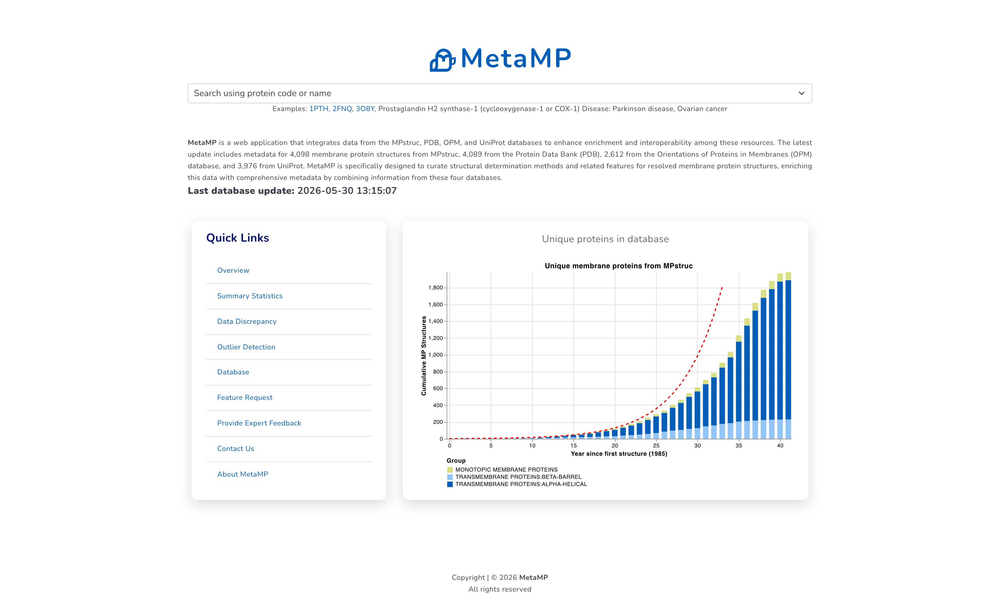
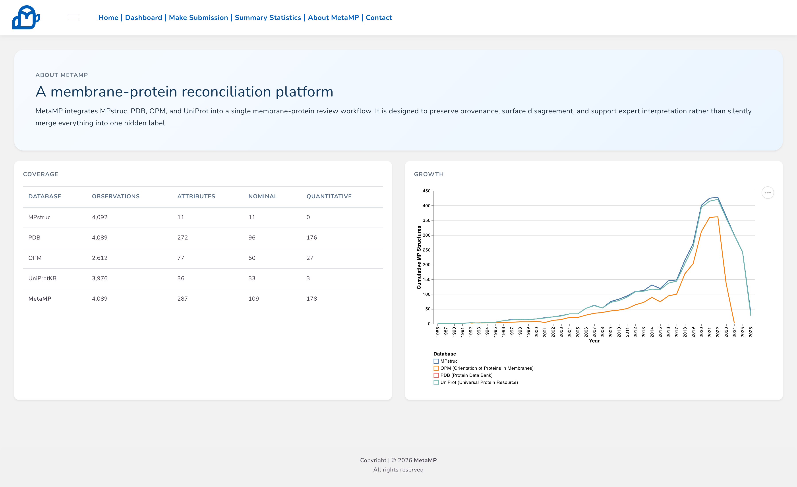
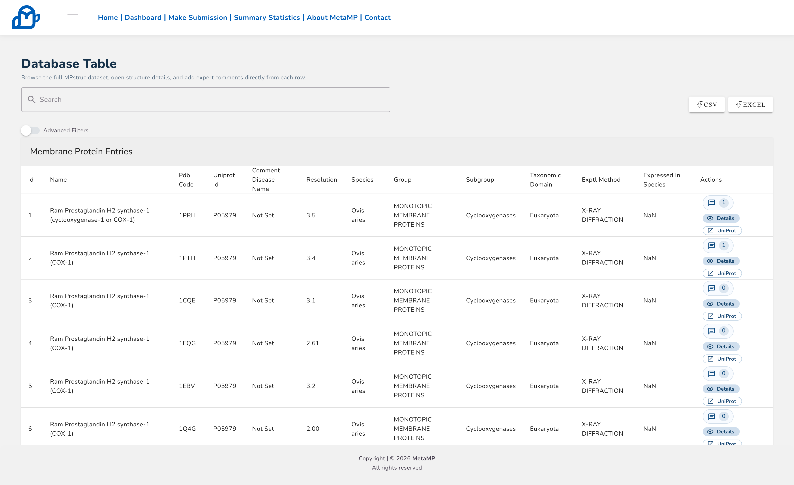
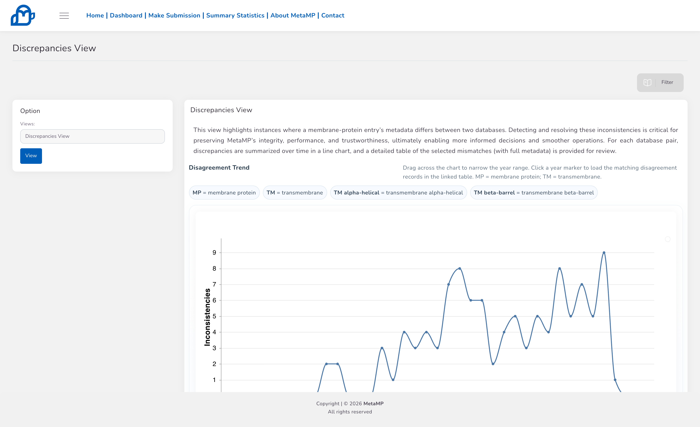
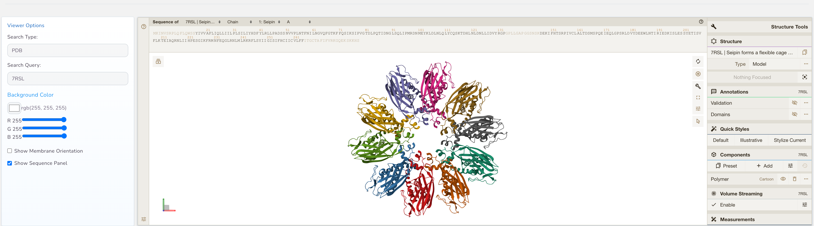
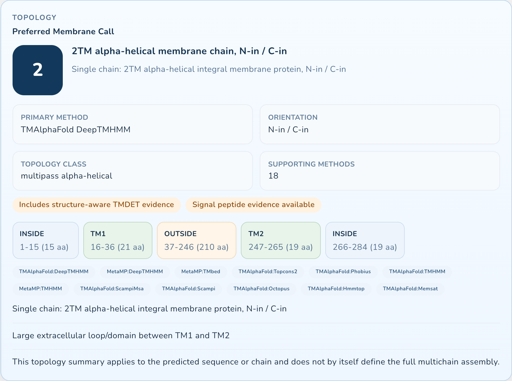
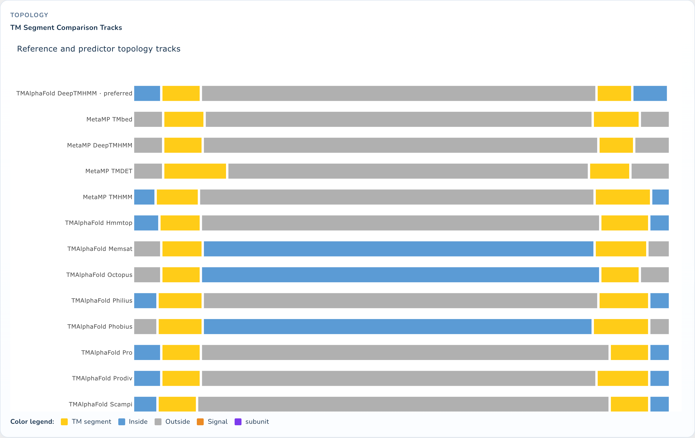
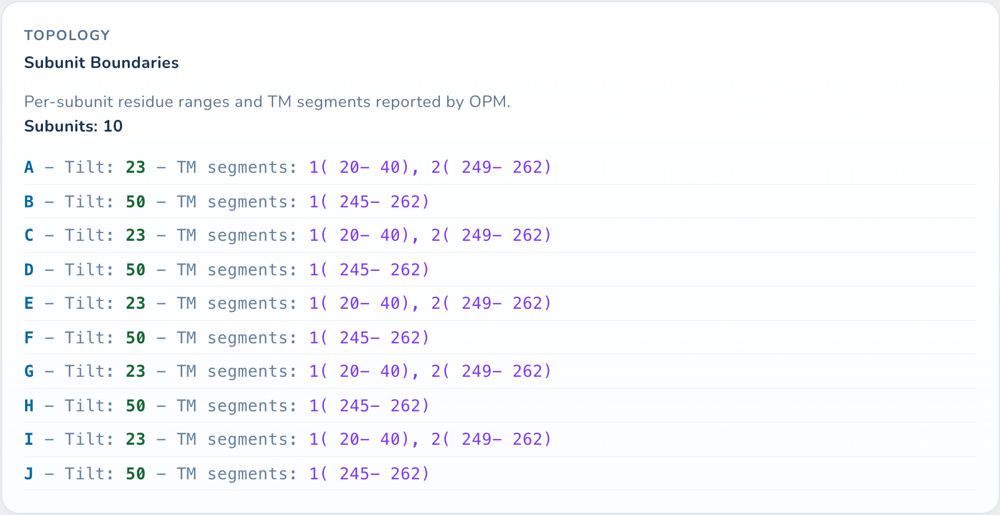
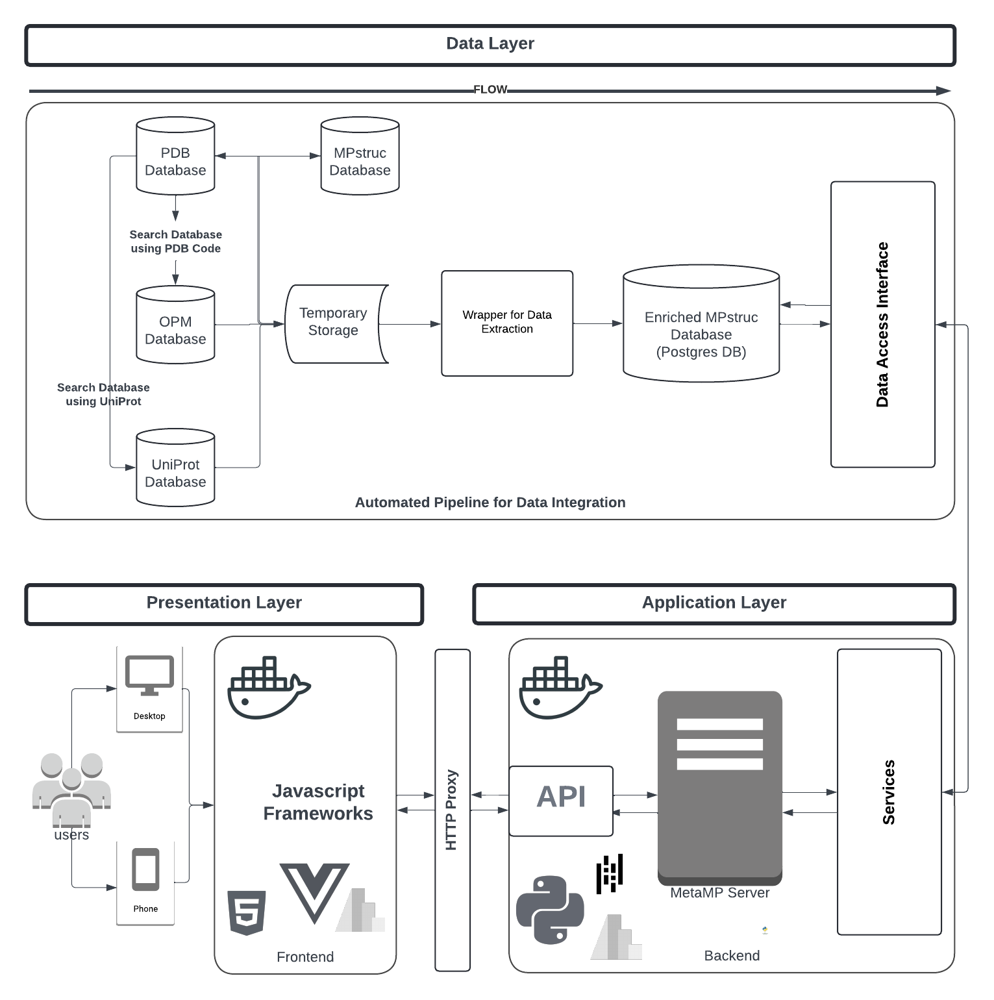

Integrate
Cross-link MPstruc, RCSB PDB, OPM, and UniProt records while preserving source-specific provenance.
MetaMP integrates metadata from MPstruc, RCSB PDB, OPM, and UniProt; surfaces cross-source disagreement; and supports topology benchmarking, single-record inspection, and deployment-ready review workflows.
MetaMP is designed around the practical review sequence: bring sources together, expose disagreement, inspect records, and export evidence for review.
Cross-link MPstruc, RCSB PDB, OPM, and UniProt records while preserving source-specific provenance.
Surface broad-group, topology, boundary, and metadata differences instead of hiding them in a single consensus label.
Review individual membrane-protein entries with structure, topology calls, evidence sources, and subunit-level context.
Use expert-reviewed contested records and export-ready outputs to support reproducible model and curation assessment.
This page summarizes the platform functions that have been implemented, revised, and prepared for stakeholder review.
Cross-links membrane-protein metadata across MPstruc, RCSB PDB, OPM, and UniProt while preserving source-specific context.
Surfaces cross-source disagreement over time and links chart selection to detailed record-level review tables.
Compares expert, OPM, TMDET, DeepTMHMM, TMbed, and TMAlphaFold-linked predictor signals in one record view.
Provides broad-group classification and transmembrane-segment benchmarking as reproducible baselines, not as autonomous curation.
Flags accession replacements, unusual resolution values, inconsistent labels, and records requiring contextual interpretation.
Supports stakeholder-facing image/PDF/SVG export workflows for figures, manuscript review, and deployment demonstrations.
The dashboard is shown as the primary product view; the supporting route cards summarize the other cached screens stakeholders can inspect without running the backend.

Integrated metadata summaries, platform-level statistics, and high-level database coverage in the main analytics workspace.

Introduces MetaMP and routes users toward exploration, database review, and use-case workflows.

Explains resource scope, source databases, and the scientific motivation for reconciliation.

Lets users inspect harmonised entries and filter metadata fields across integrated sources.

Shows cross-source disagreement and links aggregate trends to record-level evidence.
Reviewers and collaborators can clone the repository and launch the full published app with one command.
git clone https://github.com/Ebenco36/MetaMP-Server.git && cd MetaMP-Server && ./scripts/metamp-reviewer-start.sh
PDB accession 7RSL demonstrates how MetaMP combines 3D structure, preferred membrane call, topology tracks, and subunit boundaries in one reviewable record.




MetaMP is described in the following peer-reviewed article. Please cite this work if you use the platform or benchmark in your research.
Awotoro E et al. MetaMP: a membrane-protein reconciliation and benchmarking platform. Computational and Structural Biotechnology Journal, 2026. https://doi.org/10.34133/csbj.0165
@article{awotoro2026metamp,
title = {MetaMP: a membrane-protein reconciliation and benchmarking platform},
author = {Awotoro, Ebenezer and others},
journal = {Computational and Structural Biotechnology Journal},
year = {2026},
doi = {10.34133/csbj.0165},
url = {https://doi.org/10.34133/csbj.0165}
}The full platform combines backend services, data ingestion, harmonisation, and an interactive frontend. This static page is only the public demonstration layer.

{kind=link}
{kind=link}
{kind=link}
{kind=link}
{kind=link}
{kind=link}
{kind=link}
{kind=link}